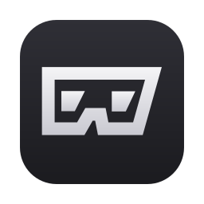
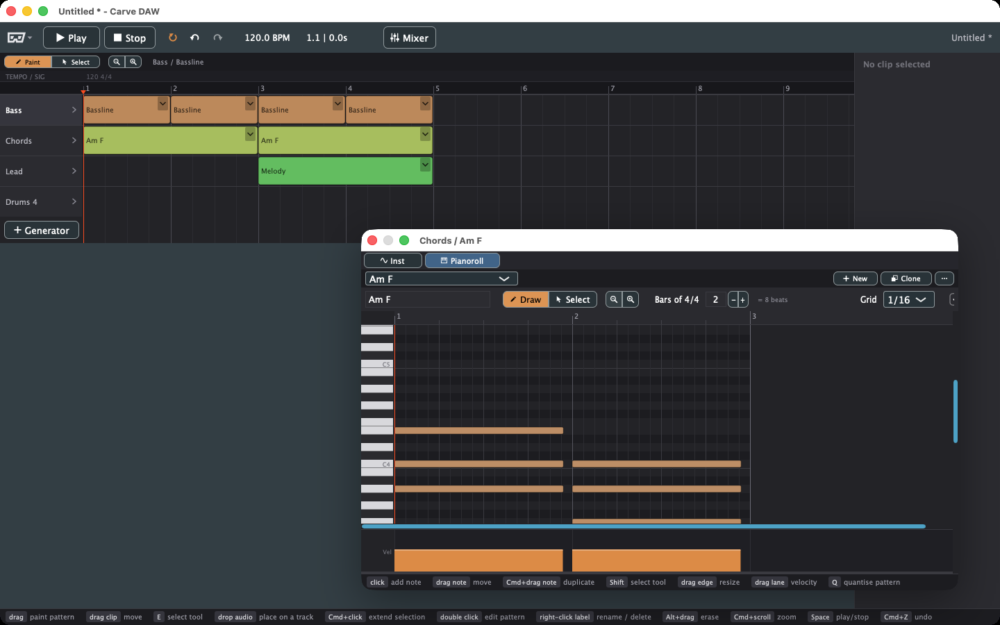
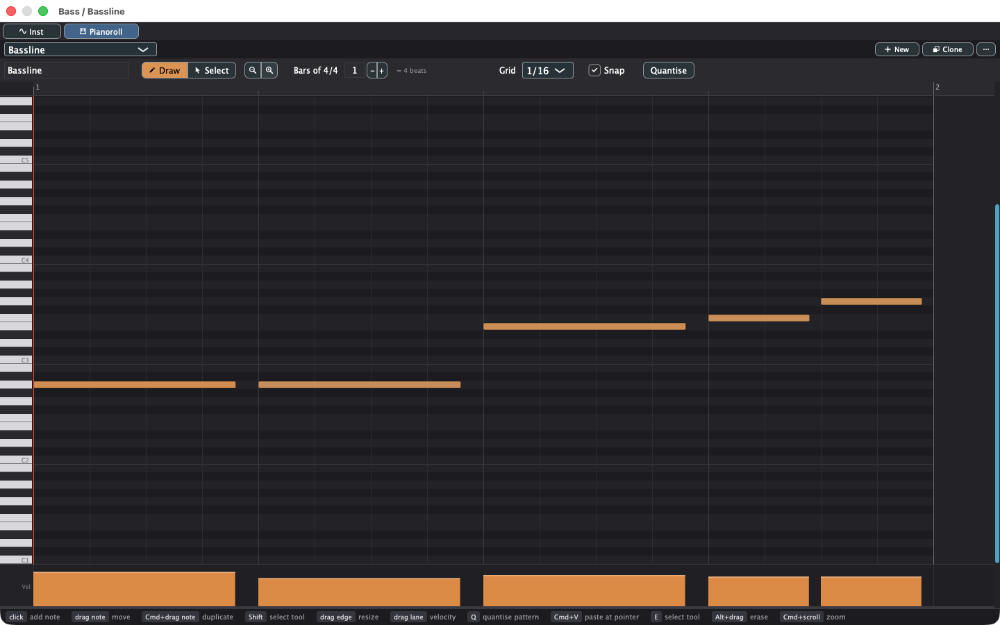
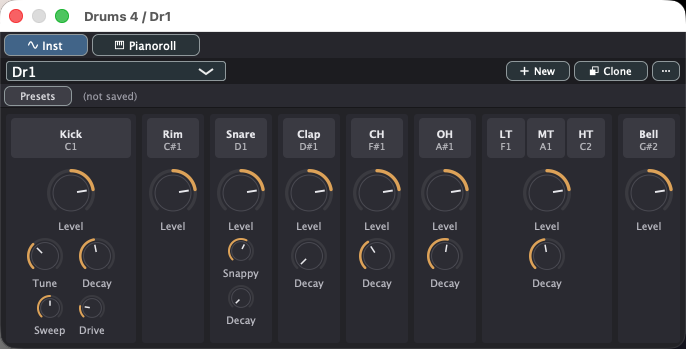
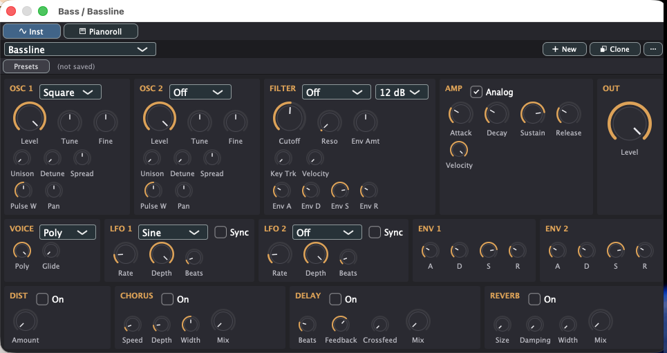
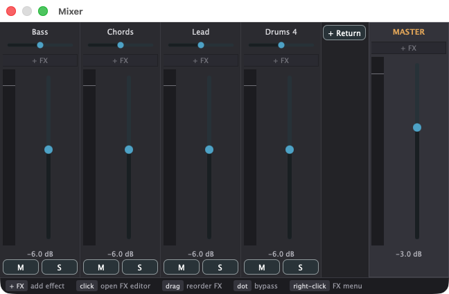

曲を彫刻のように、盛って、削って。
試行錯誤するための、ノートのようにミニマルな DAW。
Synapse Audio Software の Orion を参考に作った、Generator 中心・パターンベースの macOS 用 DAW。パターンを直せば曲中の全配置に反映され、手を動かした分だけ曲が変わる。

曲はパターンの配置。パターンを直せば、曲中に並べた全部が同時に変わる。コピーの管理はしない。
ペイントで並べ、Alt ドラッグで消す。ノートは Shift で一時的に選択、⌘ドラッグで複製 — ドラッグの途中からでも。
キック・スネア・クラップ・ハイハット・タム・カウベル。ハイハットは 6 基の矩形波を帯域通過した 808 の回路どおり。
2 オシレータ・フィルタ・アンプが 1 ページ。パッチは曲と一緒に保存される。
お手持ちのプラグインをそのまま。プラグイン自身のプリセットも Carve 側のメニューから選べる。
センド / リターン、サイドチェイン・コンプ、拍基準のオートメーションと LFO。テンポを変えても追従する。




| ロゴ (左上) | Open / Save / Save As / Export |
| 行ラベルをダブルクリック | Generator ウィンドウを開く。右クリックでリネーム / 削除 |
| B / E, D / E | ペイント / 選択 (プレイリスト)、描画 / 選択 (ピアノロール) |
| Shift | 押している間だけ選択ツール (ピアノロール) |
| ⌘ / Ctrl + ドラッグ | ノートを複製して移動。ドラッグ途中の押下 / 解放でも切り替わる |
| 右クリック | 選択中のノート上で選択を削除、それ以外は消しゴム |
| ⌘D | 複製 (クリップ / パターン) |
| ⌘E | WAV 書き出し |